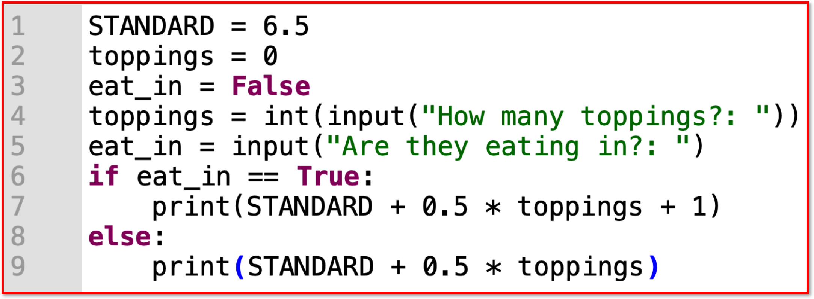

3.2.2 Programming Concepts
Table of Contents
1 Variable and Constant Declaration
Learn It: What are variables, declarations and assignments?
Variable - A named space in memory, large enough to store a single piece of data. Each variable is a value that can change during the running of a program, depending on conditions or on information passed to it. Typically, a program consists of instructions that tell the computer what to do and data that the program uses when it is running.
Declaration - Code that causes a variable or constant to exist. Once a variable or constant has been declared, it can be used. Trying to use a variable or constant before it has been declared will cause an error.
Assignment - The process of putting a value into a variable or constant. Most languages use a single equals = to do this. In the instruction i = 5, the value 5 has been assigned to the variable i. If this is the first time that i has been mentioned, this is also where it is being declared.
- Any data that a program uses must be
stored in memory locations, each given its ownidentifier(unique name) while the program is running. - As the program runs, the values in these locations might change, which is why they are called
variables. - For example, a variable called total might change several times as numbers are added to it.
- A variable called
surnamemight change as a program processes a list of customer orders. - Each variable has an
identifier(unique name) that refers to alocation in memorywhere thedatawill bestored. - Each variable also has a
data typethatdefinesthe type of data that will be stored at the memory location so thatoperationsthat can beperformedon it. - For example, you can
multiply two numberstogether, but youcannotmultiply two words. - Each variable is given an identifier which is unique and meaningful to that variable, for example,
totalrather thant,surnamerather thans. - Additionally, variables
must notinclude any keywords that will interfere with the programming language for instance and, input and print.
- Variables can be declared in one of two ways:
- Local: Declared inside a function (subprogram), and can only be accessed inside that function.
- Global: Declared outside any function (subprogram), usually at the start of the main program. They can be assessed throughout the whole program.
- Variable identifiers should also not:
- Begin with a number.
- Contain spaces.
- Contain special characters or symbols.
Try It: Variables
- Q1: Can you identify the
variable namesin the following Pseudocode and Python code wherever they are used?
Learn It: What are constants?
Constant - A named space in memory with a value that can never change during the running of a program. Useful for PI (3.142) which never changes, or VAT (20%) which seldom changes. The Python language does not allow for constants, but some other languages do.
- In some programs, there are
certain valuesthatremainthe same (constant) while the program runs. - The programmer could use the actual value in the code each time, but it is good practice to give the value a unique name (identifier) and then use that name throughout the program.
- Constants are
declaredat thestartof a program and can then be referred to as needed in the code. - The
same naming rulesapply to naming constants, although a very common approach is to useCAPITAL LETTERS. This makes it easy to see where aconstantisusedin the code rather than a variable.

- Identifiers are
definedat the start of the code, and can then be usedthroughout the programby the programmer to make coding easier. - If the
valueof a constant needs to bechanged, it must be done at thebeginning of the code, where the constant is defined.
- The two main benefits of declaring a constant are:
- When its value changes, you only have to edit it in one place rather than looking for every place in the program where you used that value.
- The code is easier to read and understand because the constant's identifier will be used instead of a number. This makes your code easier to debug and maintain.
Try It: Constants
- Q2: Which of the following could declared as a constant:
- a) score
- b) PI
- c) firstName
- d) Address
2 Programming Concepts - Sequence, selection and Iteration
Learn It: What does sequence mean?
Sequence - In a sequence structure, an action, or event, leads to the next ordered action in a predetermined order. The sequence can contain any number of actions, but no actions can be skipped in the sequence.

Selection - Is when you only want some lines of code to be run when a condition is met, otherwise you want the computer to ignore these lines and jump over them. This is achieved using IF and ELSE statements. e.g. If a condition is met then lines 4, 5, 6 are executed otherwise the computer jumps to line 7 without even looking at line 4,5 and 6.
Iteration - Is when you want the computer to execute the same lines of code several times. This is done using a loop. There are three types of loops: FOR loops, WHILE loops and REPEAT loops. Iteration is handy as it enables you not to have to copy the same lines of code many times.
Learn It: Nested Iterations
Nesting - This involves placing one programming structure inside another one. The code below contains an IF statement on line 8 that is NESTED within the WHILE loop. There is no limit to the number of levels of nesting that you could use with IF statements within either itself or another WHILE loop.
- Below is another example of having one loop nested
inside another, this algorithm displays all the multiplication tables between 2 and 12:
Try It: Nested Iteration
- Q3: What would be the output on line three in the algorithm above?
3 Programming Concepts - Subroutines - Procedures and Functions
Learn It: What are subroutines?
Subroutines - In computer programming, a subroutine is a sequence of program instructions that performs a specific task, packaged as a unit. In different programming languages, a subroutine may be called a procedure, a function, a routine, a method, or a subprogram. The generic term callable unit is sometimes used. (Source Wikipedia.org)
- The following code demonstrates how a
functioniscreatedandcalledin the main program:
- Note: This topic will be covered in greater details in the 3.2.10-Subroutines (Procedures and Functions)
Badge It: Exam Questions
Silver - Look at the following code and answer the questions below:

- The program above calculates the cost of a burger in pounds at a
fast food restaurant. A standard burger costs £6.50 with additional
toppings and eating in the restaurant. (5 Marks)
- a) List all the variables in this program?
- b) How much extra does it cost to eat your burger inside the restaurant?
- c) The restaurant manager says that 0.5 should have been declared
as a constant. Give two reasons for declaring this value as a constant:
- Reason 1
- Reason 2
Upload to Fundamentals of 3.2 Programming - 3.2.2 Programming Concepts: Silver on BourneToLearn
Badge It: Exam Questions
Gold - Answer the following questions:
- What is the difference between a variable and a constant? (1 Mark)
- The program below calculates the value of an investment at the end of one year.
a) Identify two problems with the constants or variables in the program. (2 Marks)
- Problem 1.
- Problem 2.
- Jamie wants to create a program that tells you whether you can go outside if it is raining or not.
- a) Which would be the best type of iteration to use to solve this problem, indefinite or definite iteration? Explain your answer? (3 Marks)
Upload to Fundamentals of 3.2 Programming - 3.2.2 Programming Concepts: Gold on BourneToLearn
Badge It: Coding Challenge and exam question
Platinum - Code Challenge/Exam question
- Explain the differences between a procedure and a function? (2 Marks)
- Using the Trinket below, rewrite the algorithm using a WHILE loop to produce a working Python program. (6 Marks)
Upload to Fundamentals of 3.2 Programming - 3.2.2 Programming Concepts: Platinum on BourneToLearn